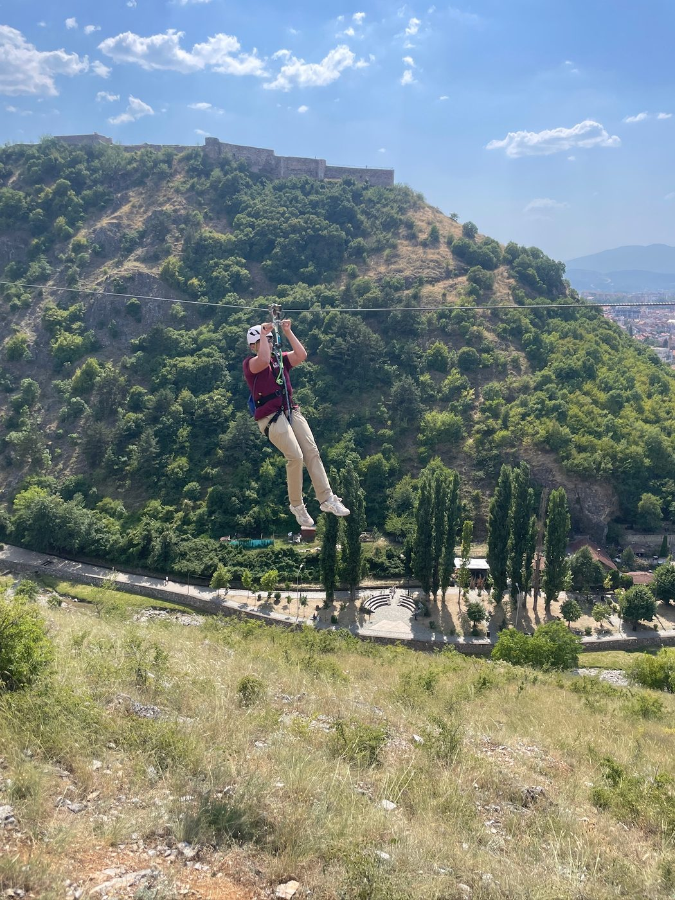
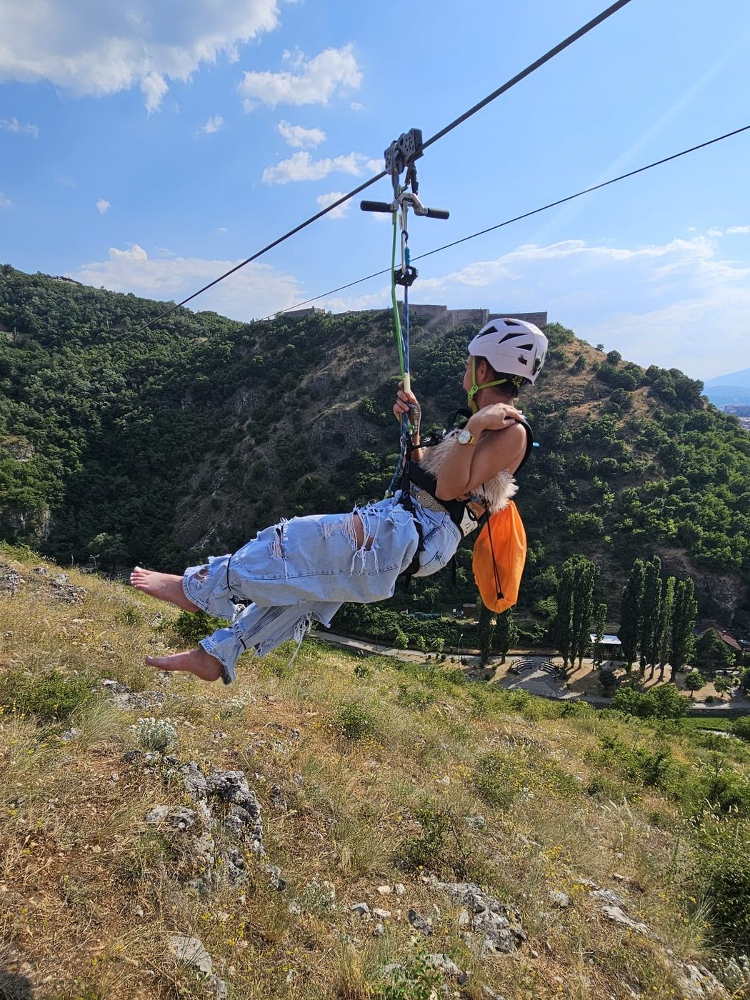
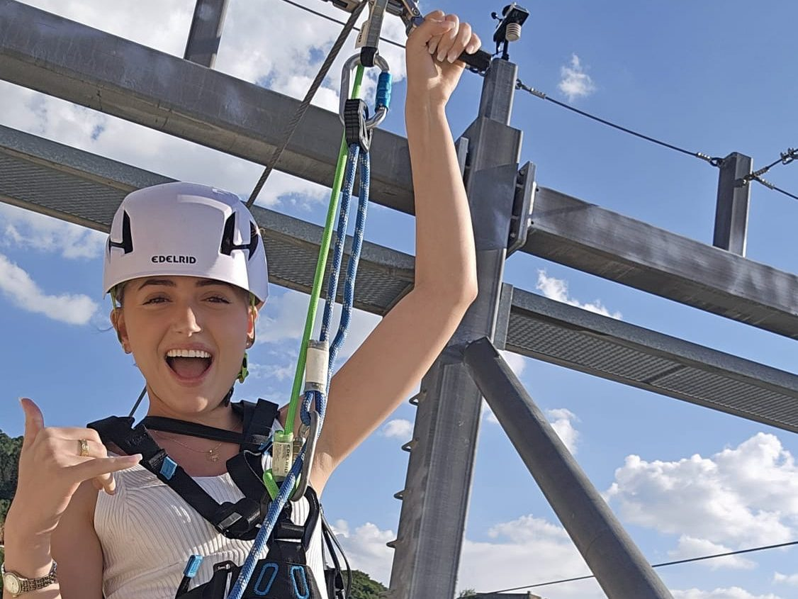

Zipline te Kalaja e Prizrenit
Fluturo mbi Prizren
Fluturo mbi luginën e Lumbardhit me nisje nga Kalaja e Prizrenit.
Çdo ditë 13:00–19:00 · Mbyllur kur ka erë, shi ose mjegull
Anëtar i ERCA · Ndërtuar sipas EN 15567-1Ambienti
Prizreni nga lart




Rregullat
Para se të fluturosh
ERCA
European Ropes Course Association
Anëtar